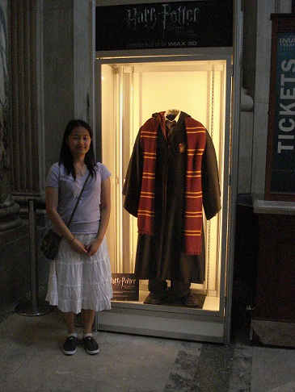

|  |
My name is Annabel.
- Studying computer science at Cal Poly.
- Graduating in March 2012. Yay!
- Interested into mobile app development.
Some cool links.
- I participated in a Food Fight for my senior project.
- I'm trying to learn JavaScript on my own, and with Codecademy.
- I recently made a simple app for Android. It's Tic Tac Toe!
Other neat facts.
|